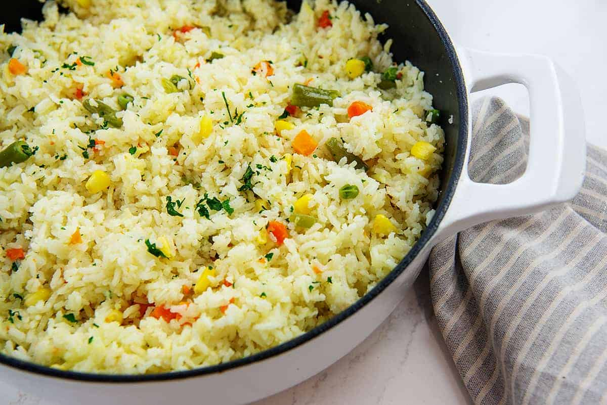

Vegtable Rice

This rice dish, contains only vegetables and is therefore vegan. It is intended as a warm meal for the day, but can also be eaten cold.
The portion is larger, because it should fill an active person.
- 150g rice
- two garlic cloves
- sesame oil
- two paprika
- one obergine
- one zucchini
- one onion
- parsley
- salt
- cook the rice
- add sesame oil into a pan and heat it
- sauté onion
- add the cut paprika, obergine and zucchini
- when they are soft add some more sesame oil and the pressed garlic
- after five minutes add the cooked rice and salt it
- mix well and leave to infuse for 10 min on low heat